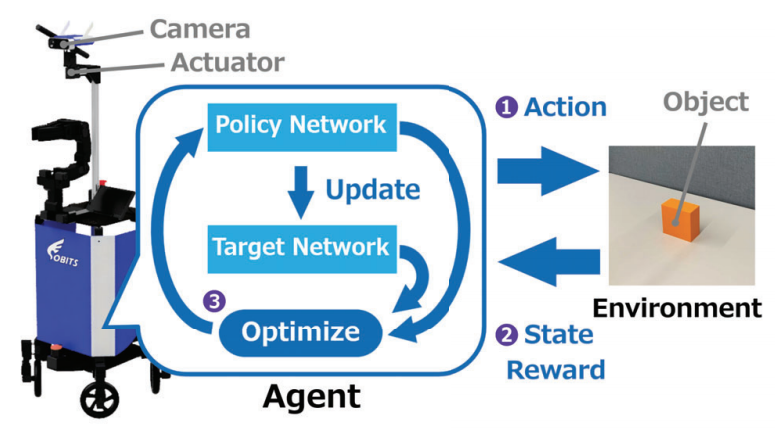
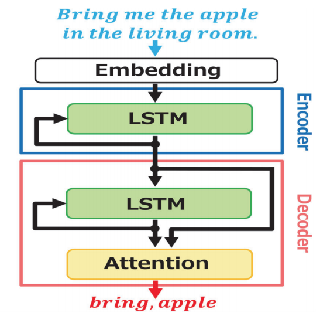
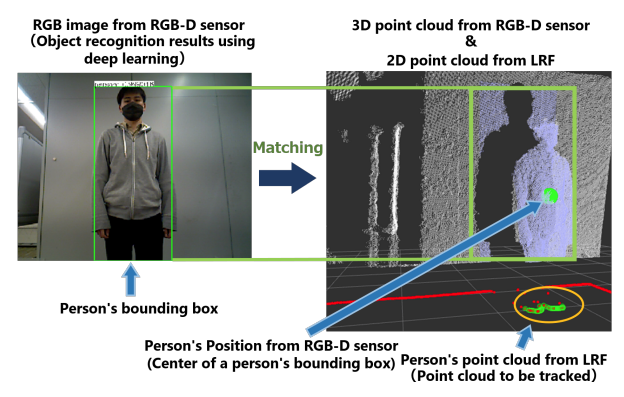
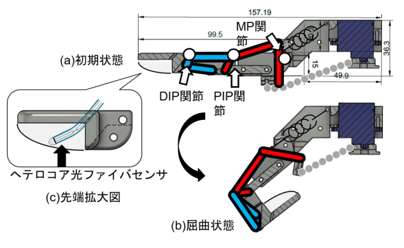
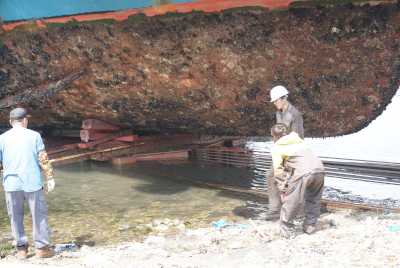
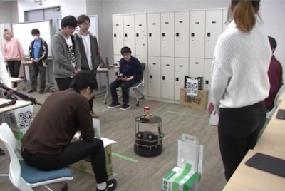

研究紹介
Research Contents
オープンソースソフトウェア
Open Source Software
研究領域
Research Areas
当研究室では、以下の3つを主な研究領域として、より快適な社会の実現を目指した研究を行っています。
Our laboratory conducts research aimed at realizing a more agreeable society in the following three main research areas.
生活支援×ロボット
Lifestyle Support & Robots
生活支援×ロボットでは、人の生活を支援するロボットを開発してます。 生活支援ロボットには、ロボットの目に該当する画像認識の技術、物体を把持するための逆運動学、人を検出して追従するための経路生成、人の命令を理解する言語処理、ハードウェアなどの要素技術が必要になります。崔研究室では、これらの要素技術の研究を行っています。
In the Life Support & Robotics, we develop robots that support people's daily lives. Life support robots require elemental technologies such as image recognition, which corresponds to the robot's eyes, inverse kinematics to grasp objects, path generation for autonomous navigation, language processing to understand human commands, and hardware development. We, in the Choi Laboratory conduct research on these elemental technologies.
-
画像差分を用いた深層強化学習によるRobotic Image Segmentation Architecture
Robotic Image Segmentation Architecture Using Deep Reinforcement Learning with Image Difference

The purpose of this research is to propose a method for image segmentation without human input of the correct answer, by moving the camera used to acquire the image itself and making distinctions for static objects.
Methods using Deep Learning have shown significant improvements in speed and accuracy in Image Segmentation and are being used in a variety of fields. However, the large amount of data required for training is created by humans, and much time and effort is spent on this process. In addition, since results and accuracy depend on the training data, output cannot be predicted for correct answers that are not included in these data. Therefore, it is necessary to perform image segmentation without the need for a human to provide the correct answers.
Therefore, object regions are detected by moving the camera itself, which is used to acquire images, and creating differences for static objects. The results of verification experiments using the Mean IoU showed that image segmentation is possible without human input of correct answers.本研究の目的は、画像の取得に用いるカメラ自体を動かし、静的な物体に対して差分を作ることで、人が正解を与えることなく、Image Segmentationを行う手法を提案することである。
Deep Learningを用いた手法により、Image Segmentationにおける速度や精度の大幅な向上が見られ、様々な分野での活躍が進んでいる。しかし、学習に必要な多量のデータは人が作成しており、 その工程に多くの時間と労力を費やしている。また、結果や精度は学習データに依存するため、これらに含まれていない正解に対しては出力を予測することができない。そのため、人が正解を与えることなく、 Image Segmentationを行うことが求められる。
そこで、画像の取得に用いるカメラ自体を動かし、静的な物体に対して差分を作ることで物体領域を検出する。このとき、カメラの動きによって検出結果が変化するため、 最適な行動を求める深層強化学習を導入する。Mean IoUを用いた検証実験の結果、人が正解を与えることなく、Image Segmentationが可能であることを示した。 -
ロボットのタスク遂行におけるAttention型Seq2Seqを用いた命令理解
Command understanding using Attention-type Seq2Seq in robot task execution.

ロボットが人の要望に応えるためには、人からの命令を理解する必要がある。 しかし、自然言語は様々な表現方法を持つため、一意の命令内容に対し無数の表現が存在する。 そのため、ロボットは多様な表現の命令から、正確にその内容を理解する必要がある。これに対し、 命令理解手法としてAttention型Seq2Seq(Sequence to Sequence)モデルによる意味解析がある。 しかし、出力は複雑な論理形式で表されるため、ロボットが実際にタスクを行うために出力を変換する必要がある。
そこで、ロボットによるタスクの遂行において、適切な出力で命令を理解する手法を提案する。出力は命令タスクに必要な情報(単語)を[“タスク”、“対象”]の順に出力する。 出力の順番に意味を持たせることで、論理式を用いることなく命令を理解する。RoboCup@Homeで使用された命令文を用いた実験の結果、論理式を用いずに命令を理解することが可能なことを示した。In order for a robot to respond to human requests, it needs to understand commands from humans. However, because natural language has various ways of expression, there are countless expressions for unique command contents. Therefore, a robot needs to accurately understand the content of commands from a wide variety of expressions. In response to this, semantic analysis based on the Attention-based Seq2Seq (Sequence to Sequence) model is one of the instruction understanding methods. However, since the output is expressed in a complex logical form, it is necessary to transform the output in order for the robot to actually perform the task.
We proposed a method to understand instructions with appropriate outputs in the execution of tasks by robots. The output is the information (words) necessary for the command task, in the order ["task", "target"]. Experimental results using the instruction sentences used in RoboCup@Home show that it is possible to understand instructions without using logical expressions. -
LiDARとパン・チルト回転機構を設けた RGB-D センサを用いた人追従走行ロボットの開発
Development of a human-following robot using RGB-D sensor with LiDAR and pan/tilt rotation mechanism

本研究の目的は，パン・チルト回転機構を備えたLiDARとRGB-Dセンサを用いた人物追従ロボットを開発することである。追従する対象の位置を取得するためには、 対象をセンサの測定範囲内に収める必要がある。
そこで、本研究では、パン・チルト回転機構付きRGB-Dセンサをターゲット方向に向けさせて画像内の人物を認識する方法と、 LiDARを用いたパーティクルフィルタで人物のターゲットを追跡する方法の両方を組み合わせた。ロボットの制御では、障害物の回避にはDWA方式を、方向転換にはPI制御を用いている。 今後、本手法を用いた実験を行い、ロボットシステムの有用性を実証する予定です。The purpose of this study is to develop a person-following robot using LiDAR and RGB-D sensor with pan/tilt rotation mechanism. In order to obtain the position of the target to be tracked, the target must be within the measurement range of the sensors.
Therefore, in this study, we combined both a method of recognizing a person in an image by having an RGB-D sensor with a pan/tilt rotation mechanism point in the direction of the target and a method of tracking the person target with a particle filter using LiDAR. In controlling the robot, the DWA method was used to avoid obstacles, and PI control was used to change direction. Future experiments using this method will be conducted to demonstrate the usefulness of the robot system. -
光ファイバ式触覚センサを搭載した指型エンドエフェクタの開発
Development of Finger-like end-effector with Fiber Optic force Sensor

ロボットハンドは、壊れやすい物体に対しても優しく把持する必要がある。従来のロボットハンドではこの問題に対応するためロボットハンドに複数センサを搭載し対応していた。
本研究では、ロボットハンドの指先に開発した光ファイバ式触覚センサを搭載した。硬度の異なる樹脂で接触検知実験を行い、接触検知が可能であることが確認できた。Robot hands need to gently grasp even fragile objects. Conventional robotic hands have responded to this problem by mounting multiple sensors on the robotic hand.
In this study, a fiber-optic tactile sensor developed in this research was mounted on the fingertip of the robot hand. Contact detection experiments were conducted with resins of different hardness, and it was confirmed that contact detection was possible.
画像処理×船舶
Image Processing & Seacrafts
画像処理×船舶では、船体の接岸支援の円滑化を目的にステレオカメラを用いた支援やアプリ開発などの船舶に関係した研究を行っています。
船体の入渠作業は、船体のメンテナンス作業のために船体を船台に乗せ、海から陸に引き揚げる作業です。入渠作業時に、船台と船底を固定する作業等はすべて人の手によって行われています
。海に浮いている船体を適切な位置に固定することは、水面下での位置把握が難しい、人員と時間がかかってしまうといった問題点があげられます。そこで、本研究室ではこの入渠作業を支援するようなシステム、
アプリケーションの開発を行っています。
貨物輸送のための大型船舶の接岸作業は、小型船舶と大型船舶と情報共有をしながら接岸作業を行っています。
この接岸作業は、長時間にわたるため作業員の負担が大きい、情報伝達ミスなどで衝突事故が起こってしまうといった問題点があります。
そこで、本研究室では情報伝達をスムーズに行うための、ステレオカメラでの船位計測システムの研究開発を行っています。
We conduct research related to seacrafts, such as the use of stereo cameras and the development of applications to facilitate hull docking support.
Docking is the process of placing a ship's hull on a barge and pulling it from the sea to land for maintenance work. During the docking process, all the work of securing the barge and the ship's bottom is done by hand. Fixing a floating hull to the proper position in the sea is problematic because it is difficult to grasp the position of the hull below the surface of the water, and it is time-consuming and manpower intensive. Therefore, this laboratory is developing systems and applications to support this docking operation.
When berthing large seacrafts for cargo transport, information is shared between small seacrafts and large seacrafts. This berthing work is time-consuming and burdensome for the workers, and miscommunication can lead to collisions. Therefore, we are researching and developing a system to measure the ship's position using stereo cameras in order to facilitate smooth communication of information.
-
入渠支援のための船体位置情報獲得
Acquisition of ship hull position for docking support

船体の入渠は船体のメンテナンスの作業のために行われており、漁船などの中型船舶は船体を台車式の船台に固定して牽引することで入渠方法がとられています。 船体の位置調節は操船者の経験に頼った位置調節と作業員の連携が必要になります。
そこで本研究室では、船底の位置推定について様々な計測器を用いて検討を重ねてきました。 超音波センサによるアプローチ、Time Of Flight(TOF)方式による計測で船底モデルまでの距離を計測しました。これにより数メートル単位での遠距離の計測が可能であることが示しました。 現在では、実用化に向けて近距離におけるステレオカメラを用いた距離計測の精度を補う研究が行っています。Hull docking is used for hull maintenance work, and the docking method for medium-sized seacrafts such as fishing boats is to secure the hull to a dolly-type barge and tow it. Adjusting the position of the hull requires the operator's experience in positioning the hull and the coordination of workers.
Therefore, this laboratory has studied the estimation of the bottom position of the seacraft using different measuring instruments. We have measured the distance to the ship's bottom model using an ultrasonic sensor approach and the Time Of Flight (TOF) method. This has shown that it is possible to measure distant distances in the range of a few meters. Currently, research is being conducted to supplement the accuracy of distance measurements using stereo cameras at short distances for practical use. -
接岸作業時における距離計測の精度向上
Improved accuracy of distance measurement during berthing operations
貨物輸送などに用いられる大型船舶は港湾やコンテナターミナルへの接岸時にタグボートと言われる小型船と大型船舶が連携して接岸作業を行います。 作業時に、小型船舶と大型船舶間の情報伝達のミスなどの人的ミスが原因で衝突事故が発生が考えられます。
そこで船体の前方と後方にカメラユニットを設置することで岸と船体との距離を計測して接岸を支援する研究を行っています。 カメラと船体の距離を計測する際に、これまでにマーカーレスでの計測が可能、照度変化、スケール変換にも対応、15~25[m]の範囲で計測誤差が20[mm]での計測が可能、計測結果に基づく描画システムも開発を行ってきました 現在では、距離計測の精度向上を目標に研究開発に取り組んでいます。When large seacrafts used for cargo transport berth at ports and container terminals, small seacrafts called tugboats and large seacrafts work together to berth. During the docking process, human error, such as miscommunication of information between the small seacraft and the large seacraft, could result in a collision.
We are therefore conducting research to support berthing by measuring the distance between the seacraft and the shore by installing camera units in front of and behind the seacraft. We have developed a system that can measure the distance between the camera and the hull without using markers, can handle changes in illumination and scale conversion, can measure in the range of 15~25[m] with a measurement error of 20[mm], and can draw a picture based on the measurement results. Currently, we are engaged in research and development with the goal of improving the accuracy of distance measurement.
教育×ロボット
Education & Robotics
教育✕ロボットでは、初学者向けのプログラミング学習システムを開発し、プログラミング能力と意欲の向上を目的に開発を行っています。
2020年以降、小学校、中学校ではプログラミング教育が必修科目として導入されるほど、今後の現代社会においてプログラミング能力は不可欠なものになってくると考えています。しかしプログラミングとして浮かび上がる、テキストをタイピングする言語ではエラー処理などに時間がかかり、そもそも実行するまでたどり着かないという場合が考えられます。また、なんとか実行までたどり着いても画面上で実行結果が完結する場合、その実行結果がなぜその実行結果になったのかよくわからないといった状況も起こりうると考えられます。そこで、SOBITSではビジュアル言語ScratchでTurtleBot2というロボットを操作できる初学者向けのプログラミング学習システム、SOBIT-Beginを開発しました。
Education & Robotics is developing a programming learning system for beginners to improve their programming skills and motivation.
We believe that programming skills will become indispensable in today's society, to the extent that programming education will be introduced as a compulsory subject in Japanese elementary and junior high schools from 2020. However, in the case of languages that require typing text to program, it may take a long time to correct errors, and it may be difficult to get to the point of executing the program at all. Even if you manage to get to the execution stage, when the execution result is completed on the screen, you may not be able to understand the reason why the result was obtained. To solve this problem, SOBITS has developed SOBIT-Begin, a programming learning system for beginners that allows them to control a robot called TurtleBot2 using the Scratch visual language.
-
ビジュアル言語Scartchを用いた初学者向けのロボットプログラミングの提案
Proposed method of robot programming for beginners using the visual language Scratch

これまでに本研究室では、ビジュアル言語Scratchを用いたプログラミング教育システムを開発してきました。ユーザのPCからネットワークを通じてロボットと通信を行うことで、プログラミング初学者が実際にプログラムを書き、実行することでロボットの操作を可能にしました。プログラミング初学者の苦手意識を減らすこと、論理的思考力を向上させることを目的に、本システムを本大学の工学部一年生の授業に導入しました。
しかし、本システムは実機ロボットの導入が前提としたシステムとなっています。近年のコロナウイルス感染拡大により、家庭で学習する機会が増えました。本システムのロボットを用いた、家庭での学習、利用は困難であると考えました。そこで、現在ユーザのPCで先行システムを使えるよな開発を行っています。先行のシステムに加えてシミュレーション機能を追加しました。これにより、ユーザがプログラムを実行することでシミュレーション内のロボットを動かすことができます。We have been developing a programming education system using the visual language Scratch. By communicating with the robot from the user's PC through the network, the system enables novice programmers to operate the robot by actually writing and executing programs. This system was introduced to a class of first-year engineering students at this university with the goal of reducing the difficulty of beginning programmers and improving their ability to think logically.
However, this system is based on the assumption that actual robots will be introduced. The recent spread of coronavirus infection has increased opportunities for learning at home. We considered that it would be difficult to learn and use this system at home with a robot. Therefore, we are currently developing a system that can be used on the user's PC. In addition to the preceding system, we have added a simulation function. This allows the user to run the robot in the simulation by executing a program.